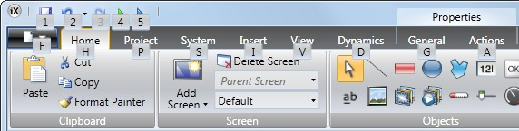
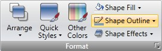
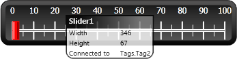
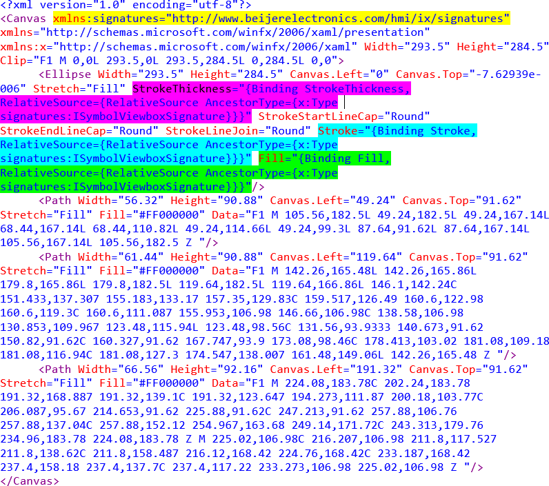

Development Environment
This section describes how to work with iX Developer. Clicking the Options button in the File menu allows adapting the tool behavior.
Starting iX Developer
Click on Start/All Programs/iX Developer/iX Developer to start iX Developer.
iX Developer can also be started from the command line.
When starting a newly installed version for the first time the user gets the option to import the settings from the previous version.
This could also be done later from the File menu: Import settings.
The following settings are imported:
License key
Recent Projects
Added items in Component Library
Additional Controls
After importing settings from previous version, information about what has been imported is displayed.
When iX Developer is started, it is possible to:
Create a new project using a wizard
Open an existing project - a list of recently opened projects is displayed
Open a sample project
Upload a project from a target
Import a project created in Information Designer
View the User’s Guide, based on an example project that serves as an instructive introduction to iX Developer
Projects can also be created or opened later from the File menu.
Related information |
|---|
Creating a New Project
To create a new project using the wizard, includes the following steps:
Start iX Developer.
Select to create a new project.
Select target for the project.
Select controller brand and model.
Name the project and define where files are to be saved in the PC environment.
Select HMI panel
Select the appropriate target from the presented set of HMI panel/PC.
The target can be changed later, from the Settings group on the Project ribbon tab. For most panels it is possible to select a rotated view.
When working with a project for a standard PC, it is possible to select resolution from a drop-down list. The PC resolution can be changed later, by entering the Settings group on the Project ribbon tab.
Related information |
|---|
Select Controller
Select the appropriate controller for the project.
The demo controller, including regular tags (data containers) and counters, is used to design and test a project directly on the development PC without connection to an external controller.
Internal tags that work like controller tags, but are independent of an external controller, can be defined.
It is also possible to connect to an external OPC server.
The controller can be changed later by clicking the Controller button on the Controllers tab of the tags configuration page.
A project can connect to more than one controller.
Note
OPC Classic is not supported for X2 pro series (OPC Classic is no longer supported by Windows Embedded Compact 2013).
Select Location
The Select Location dialog controls naming of the project and where project files are saved in the computer environment.
Change the project name, if desired.
Select where to store the project files by clicking Browse, or accept the suggested location.
Click Finish to create the new project.
Opening a Project
To open an existing project using the wizard, includes the following steps:
Start iX Developer.
Select to open a project.
Browse to the project file in the appearing open project dialog.
Note
It is possible to open a compressed ZIP file of the iX Developer project. The user will be prompted for a path where the ZIP file can be decompressed.
Related information |
|---|
Getting Familiar with iX Developer
The ribbon tabs (e.g. Home, System and Insert) are located in the top of the window when iX Developer is started. The control groups (e.g. Clipboard, Screen, Objects on the Home ribbon tab) are available in the ribbon area.
The Project Explorer contains a folder area, and is managed as a docked window.
The desktop area is where screens are drawn and where tags and functions are handled.
Configuration of objects on a screen is mainly performed using the controls in the Home and General tabs. Selecting an object on the screen displays the Home ribbon tab; double-clicking displays the General tab, except for the Button object, for which the Actions tab is displayed instead. Several common commands are also available by right-clicking on an object in a screen.
Related information |
|---|
Keyboard Navigation
Pressing [Alt] on the keyboard displays which keyboard shortcut commands can be used to execute a command or to enter a control group, e.g. [Alt + F] opens the File menu, and [Alt + I] displays the Insert ribbon tab control groups.
|  |
Keyboard Shortcuts and Function Key Commands
The list below includes some of the keyboard shortcuts and function key commands that are available in iX Developer:
Keyboard shortcut / function key | Description |
|---|---|
Ctrl + P, [number of the screen] | Switch between screens according to their order on the desktop |
Ctrl + E, L | Lock selected elements on active screen (E indicates active editor) |
Ctrl + E, H | Hide selected elements on active screen (E indicates active editor) |
Ctrl + Z | Undo |
Ctrl + Y | Redo |
Ctrl + A | Select all |
Ctrl + X | Cut |
Ctrl + C | Copy |
Ctrl + V | Paste |
Ctrl + N | New project |
Ctrl + O | Open project |
Ctrl + S | Save project |
Ctrl + B | Bold style |
Ctrl + I | Italic style |
Ctrl + U | Underline |
F1 | Display help file. Pressing F1 from within the Script Editor displays scripting help. |
F5 | Validate project |
F6 | Run |
Starting iX Developer from the Command Line
iX Developer can also be started from the command line, by entering: [Path to the NeoIDE.exe file]" "[Project location]\[Project name].neoproj
Example
To start iX Developer, and open the project named Test1 in the directory C:\MyProjects, select Run from Windows start menu, and type:
C:\Program Files (x86)\Beijer Electronics AB\iX Developer 2\Bin\NeoIDE.exe" "C:\MyProjects\Test1\Test1.neoproj
File Menu
The File menu contains commands for creating, opening, closing saving and compressing projects. It also offers the possibility to upload a project from a target and to update drivers and iX Developer software via Internet or from file. The File menu is accessed by clicking on the top left button.
New
When you start iX Developer and select to create a new project, a wizard guides you through the creation of a new project, in the same way as having selected Create New Project from the Welcome page.
Related information |
|---|
Open
Selecting Open displays a dialog that allows selection of an existing project file by browsing.
Save
Selecting Save saves the project to the current project folder.
Save As
Selecting Save As allows saving the project with a different name and/or in a different location.
To ensure that the original project remains unchanged, the new project file must be created with the Save As command before modifying its contents.
Creating a new folder when using the Save as command helps keeping the large number of project files neatly collected and easy to overview.
Note
Selecting Save as cannot be used in order to make modifications of an existing project, keeping the original project unchanged, and saving the new version with another name. Changes will affect the original project anyway. It is recommended to make a backup copy of the original project, for example by using Windows Explorer, prior to modifying it.
Back Up Project
Selecting Back Up Project compresses the project and saves it asa ZIP file. The user will be prompted for a path where to save the ZIP file and will also be offered the possibility to password protect the ZIP file.
Related information |
|---|
Upload from Target
Selecting Upload from Target allows uploading a compressed ZIP file of a project from a connected target.
Note
To be able to use the “Upload from target” function, the check box “Download all source code” on the “Download” dialog must have been clicked before downloading the project to an HMI panel. See the “Download” chapter for more information.
Parameter | Description |
|---|---|
Connected targets | Choose the target type to transfer the project from. |
Upload | Starts the transfer of the ZIP file from the selected target. The user will be prompted for a path where to decompress the ZIP file. If the ZIP file is password protected, the user must enter the password to be able to upload and decompress the ZIP file. |
Log | Show the data being logged during the upload and verify process. |
Related information |
|---|
Close Project
Selecting Close Project closes the current project and activates the start wizard.
Update Software
The latest updates and patches for iX Developer can be downloaded directly via an Internet connection.
Update Drivers
Drivers can be updated via Internet or from file.
Related information |
|---|
About
Clicking the About button displays information about the current version of iX Developer including the product registration key.
Note
The active project needs to be saved in order to access the list of features.
Note
If a feature has previously been installed from an iX Developer version older than 2.40 SP5, then the registration key will automatically be converted when upgrading to iX Developer version 2.40 SP7.
Options
Clicking the Options button allows making settings that control the behavior and appearance of iX Developer.
Language Options
Select in which language to run iX Developer. A restart of the application is required for the new language selection to have an effect.
Build Options
Select whether the CheckForUnusedTags function should be activated or not. When building a project, the function checks for unused tags and presents a dialog in which it is possible to remove these.
Related information |
|---|
Script Debugger Options
Arguments: The “%1” argument is where the file name will be inserted. This option is applicable only when Custom is selected for DebuggerType.
Debugger: Full path to the current debugger application.
DebuggerType: Select Default or Custom. With the Default setting, the system will automatically provide the path to the debugger, if found. Custom allows the user to provide the path to a specific debugger.
Transfer options
Select if the Download all source code checkbox in the Download dialog should be automatically selected.
Usage Telemetry options
If the value of AllowUsageTelemetry is set to FALSE, no data will be collected and sent to the cloud regarding the usage telemetry. By default, the value is TRUE.
Message Info options
Select if the iX Developer version update information should be shown or not during startup.
If the value of ShowVersionInfoOnStartup is set to FALSE, the iX Developer version update information will not be shown during startup.
Screen Editor Options
EnableInPlaceEditing: This option allows editing an object directly when selecting it on the screen without having to access its properties on e.g. the General ribbon tab.
ShowPanelAround: This option displays an outline of the selected panel model around the desktop area.
ShowSizeAndDistanceInformation: The size of an object is displayed while resizing it. Distance to the edges of the desktop area is displayed when moving an object. The indication can be turned off, if desired, by setting this option to False.
ShowToolTips: Useful tool tips are automatically displayed in iX Developer. These can be turned off, if desired, by setting this option to False.
The screen editor options can also be modified using buttons in the lower part of the desktop area.
Related information |
|---|
Ribbon Options
GoToDefaultRibbonStrategy: This option changes the active ribbon based on the context of the selection in the desktop. When an object is created or selected, the General tab becomes active in the ribbon area.
SimpleRibbonStrategy: This is the default setting, and does not swap the active ribbon when the context of the current desktop selection changes. Clicking on an object opens the Home ribbon, and double-clicking opens the General ribbon for most objects, but for buttons the Actions ribbon is activated.
Mini Toolbar Options
The mini toolbar is a context menu addition with a subset of common controls from the Format, Tag/Security and Name groups.
ShowMinitoolbarAutomatic: When this option is set to True the mini toolbar part of the context menu is displayed already when an object is selected. The mini toolbar will always show in combination with the context menu. The mini toolbar will remain active for a selected object, also after it has disappeared, until the selection or the pointer moves away. To show the mini toolbar again move the mouse pointer to the upper right of the object. With the default setting, False, the mini toolbar will only show in combination with the context menu for an object.
Tags Editor Options
Selections under Tags Editor Options makes it possible to customize which columns to show by default in the tags configuration window.
Exit
Clicking the Exit button closes the application. If there are unsaved changes, you are asked if you want to save them before exiting.
Quick Access Toolbar
The Quick Access Toolbar contains controls, expected to be used frequently. The toolbar can be customized to include other buttons.
Save
Saves the current project to the location specified when the project was created.
Undo
Executed commands can be undone using the Undo button. Clicking the small arrow at the right of the Undo button lists recently made changes for selection of the undo operation.
The keyboard shortcut for Undo is [Ctrl + Z].
Redo
A command that has been undone with Undo can be redone with Redo. The keyboard shortcut for Redo is [Ctrl + Y].
Run
Performs a validation of script code and compiles the project. If the project is valid, a simulation is started on the development PC with connection to the selected controller. Also available from the Transfer group on the Project ribbon tab.
Simulate
Performs a validation of script code and compiles the project. If the project is valid, a simulation is started on the development PC without connection to the selected controller. Also available from the Transfer group on the Project ribbon tab.
Related information |
|---|
Customizing Quick Access Toolbar
Some of the ribbon controls can be added to the Quick Access Toolbar. Right-click on the desired control and select Add to Quick Access Toolbar or Remove from Quick Access Toolbar.
Ribbon Tabs
The ribbon tabs contain grouped controls for editing and maintaining a project, screens and objects. Click on any ribbon tab to display the ribbon.
Use Minimize the Ribbon and Maximize the Ribbon to collapse and expand the ribbon control tabs, or double-click on a ribbon tab. This can also be done from the Quick Access toolbar.
Additional Properties
Some ribbon groups include additional properties that can be configured by clicking the small arrow in the lower right corner of the current group.
|  |
The properties window displays available property groups available for selection at the left. The property groups available differ depending on which object is selected.
 |
Desktop Area
The desktop area displays screens and configuration pages for project components such as controllers and functions. The desktop area shows only one screen or component at a time. When multiple screens or components are opened a row of tabs are shown in the upper part of the desktop area. Clicking on a tab activates its contents for editing.
If there are more tabs open than can be displayed, navigation arrows in the upper part of the desktop area can be used to scroll between them.
Screen View in Desktop Area
Object appearance as well as size and appearance of the current screen can be managed by controls in the lower part of the desktop area. It is also possible to turn on and off the in-place editing function that allows editing text in an object directly when selecting it on the screen.
Show/Hide Size and Distance Information
The size of an object is displayed while resizing it. Distance to the edges of the desktop area is displayed when moving an object.
Show Sizeand Distance Information is activated
Show/Hide Info
It is possible to show information about which tag each object is connected to, and if dynamics or actions are configured for the object, by clicking on the Show/Hide Info button.
 |
Show Info is activated
Show/Hide Screen Tooltips
A semi-transparent tooltip is displayed for each object when the cursor is rested on it, if Show Screen Tooltips is selected. Tooltips for e.g. menu commands are not affected by this setting; only tooltips for objects on the screen.
|  |
Show Screen Tooltips is activated
Enable/Disable In-place Editing
This option allows editing an object directly when selecting it on the screen without having to access its properties on e.g. the General ribbon tab.
In-place Editing is enabled
Show/Hide Panel Frame
Show/Hide Panel Frame displays or hides a virtual panel frame surrounding the screen, when an HMI panel is selected as target.
Fit to Screen
Click on Fit to Screen to make the screen the maximum size that will fit in the desktop area.
Zoom
The following methods can be used to zoom in to or out from the desktop area:
Selecting a set zoom value from the Zoom drop-down list.
Setting the Zoom Slider to a desired zoom level.
Clicking the Zoom In and Zoom Out buttons.
Placing the mouse pointer anywhere in the screen and using the scroll wheel.
Pan
Panning of the current screen is possible in Layout mode, if the screen is larger than the desktop area.
Press and hold [Spacebar] (the mouse pointer will change its appearance from an arrow shape to an open hand).
Drag to pan the screen (the mouse pointer hand closes in panning mode).
Screens and functions have different view modes. The default setting is Layout view mode, but screens and functions can be partly viewed and edited directly in code. The desired mode is selected from the lower left part of the desktop area. The code for screens is in xaml and in C# for script.
Caution
Incorrect code entered in text mode (Xaml and Script) may result in errors that are not possible to recognize during analysis and build.
Erroneous code may result in unpredictable behavior and loss of data.
Desktop View Modes
Screens and functions have different view modes. The default setting is Layout view mode, but screens and functions can be partly viewed and edited directly in code. The desired mode is selected from the lower left part of the desktop area. The code for screens is in xaml and in C# for script.
Caution
Incorrect code entered in text mode (Xaml and Script) may result in errors that are not possible to recognize during analysis and build. Erroneous code may result in unpredictable behavior and loss of data.
Layout
Screens and objects are usually edited in Layout view mode.
XAML
A screen layout is defined in XAML (eXtensible Application Markup Language) code. The .xaml files are stored in the project folder.
XAML code can be added and changed in the Xaml view mode. Any changes done in the XAML code will affect the screen layout.
Script
In Script view mode scripted actions can be configured for screens, objects, tags, function keys etc.
Note
To display a script guide that describes iX Developer scripting possibilities in detail, select Script view mode, click anywhere in the code, and press F1.
Note
To be able to script inside iX Developer, any open Visual Studio Debug sessions needs to be closed first.
Caution
Beijer Electronics only offers support for scripting for the included examples in iX Developer.
Objects that can trigger events will show with expandable nodes in the Script view. Clicking the [+] of such a node expands it and shows the trigger events for the object. Double-clicking on an event inserts its method heading with an empty code body. Scripts are written in C# syntax.
When actions are defined for an object, this will have precedence over script code.
Note
Avoid using multiple trigger methods as this may lead to undesired behavior.
Use either a script or define actions with the controls on the Actions tab. Avoid using Click Action Trigger actions in combination with Mouse Button Action Triggers.
Note
Creating scripts that block execution, waiting for other resources or user input, is not supported.
Note
The ValueOff and ValueOn events for internal variables are available for selection in script mode, but they are not executed when running the project.
Note
The ValueChangeOrError event is available in script mode, but it should only be used with controller tags. It does not support internal variables or system tags.
Note
If an external editor, e.g. Visual Studio, is used for editing a script, the cross-reference will not be updated when building the project in iX Developer. The Remove Unused Tags function will report tags used in these scripts as unused.
For iX Developer to recognize a change made with an external editor, the script file needs to be opened in iX Developer and provided with just any small change using the script editor in iX Developer. Save the project once more before build.
Note
Avoid static state when using script since this might cause memory leaks.
Always remember to unsubscribe events previously subscribed to, in order to avoid memory leaks.
Complex behavior can be created using script code.
Selections made in Layout view mode are kept when switching to Script view mode and vice versa.
Nodes with edited script code are highlighted in the expanded tree view.
Highlight of an edited node in the tree view
It is possible to disable a script without deleting it, by right-clicking on a node with script, and selecting Unhook event handler. This excludes the script from being run, even though there is code, and the node will no longer be highlighted.
Some objects, such as text boxes, list boxes and combo boxes, rely on script code for advanced behavior.
Name Completion
A context sensitive name completion feature (IntelliSense) can be activated during typing with [Ctrl]+ [Spacebar] and it triggers automatically when a period (‘.’) is typed after a code element. Using items outside the current scope is defined with the keyword Globals, but it is not possible to script to other screens than the currently selected.
Methods are completed without argument lists. Add parenthesis and arguments to complete a selection.
Note
Incorrect script code may result in errors that are not possible to recognize during analysis and build. Erroneous code may result in unpredictable behavior and loss of data.
Note
Not all tags available in Tags are visible in IntelliSense when scripting. The name completion function will not show tags and objects that have names similar to script command names.
If there are errors in script code during validation of a project, it is possible to navigate to the erroneous position by double-clicking the error in the error list.
Press [Ctrl]+ [Shift]+ [Spacebar] while editing to get a tool tip with the allowed variants of an overloaded method. Use [Up arrow] or [Down arrow] to scroll. Make a new selection or press [Esc] to close the tool tip.
Note
It is necessary to do an explicit type casting of the tag format for operands of an overloaded method.
Script code can be used to format objects. If an object attribute is selected a tool tip with allowed methods will appear. Methods not part of the default C# API is either addressed with the full path or the library can be included.
Related information |
|---|
Example
Filling a rectangle object using a color gradient from one color to another color.
The following code implements a gradient from red to purple in the rectangle. The library with the “BrushCF()” method is added with “using” in the beginning of the example, together with the default libraries.
Note
When a timer is used in script code, it is important to close the timer in the code.
Note
Renaming objects and screens included in scripts in Layout mode will cause the scripts not to function.
Referenced Assemblies
Third-party components and objects that are added to the project via Referenced Assemblies will be made available when scripting. Their methods and properties will be included by the name completion function, in the same way as for built-in components.
Related information |
|---|
Aliases
Aliases can be configured in the Aliases view mode.
Import/Export for Alias
Alias instances can be exported and imported using the Import/Export button in the Alias Instances configuration page. The procedure is similar to exporting and importing tags. New Alias instances can be added by adding a row in the import file. Similarly, new aliases can be added by adding new columns in the import file.
When exporting the Alias instances, the default values for the aliases will appear as a row in the exported file with the name DefaultValue. If the DefaultValue row exists when an Alias instance is imported, the values can be used to update the default values for the aliases.
Note
For DefaultValue, use the Overwrite or Merge option to update the existing alias default values and to solve the name conflict.
The default value will not be updated if the Change option is chosen for DefaultValue. Instead a new Alias instance is created with the changed name.
Related information |
|---|
Positioning Windows
The behavior of many windows can be adapted in order to suit the user; for example shown or hidden, or moved to another position on the desktop.
Docked windows representing control tools can be converted to floating windows. Control tools can be docked separately or be managed as a tabbed group in a window. A docked tool window supports auto-hide.
When a window is dockable, a guide diamond appears when the window is moved on the desktop. Extended position arrows appear at the desktop edges. The guide diamond makes it possible to dock a tool window to one of the four sides of the desktop area. When a tool window is undocked, it floats on top of the desktop.
Dropping a tool at the center of a guide diamond creates a tabbed group of the tools inside the window that the guide diamond belongs to.
Docking a Tool
Drag the window heading to any position on the screen. If the tool is not docked it will become floating.
To re-dock a tool:
If the tool is docked already, double-click on its heading to change to floating.
Drag the tool to the center of the desktop. A guide diamond appears, pointing towards the four edges of the desktop. Release the window to the desired direction. When the mouse pointer is in position, an outline of the window appears in the designated area.
Docking a Tabbed Group
It is possible to dock a tool to an existing group of tools, creating a grouped window with tabs:
If the tool is docked already, double-click on its heading to change to floating.
Drag the tool to the center of the existing group. A guide diamond appears.
Drop the tool at the guide diamond center.
Releasing a Tool from a Tabbed Group
When a window contains multiple tools, they appear as tabs in the lower part of the window. To release a tool that resides in a tabbed group, drag the tab for the tool and drop it on the desktop.
Auto-Hide
Auto-Hide enables a maximized view of the desktop area by minimizing tool windows along the edges of the desktop area when not in use. Auto-Hide is turned on and off by clicking the Auto-Hide pushpin icon on the window title bar.
Tool windows expand to their original size when the pointer hovers over them. When a hidden tool window loses focus, it slides back to its tab on the edge of the desktop area. While a tool window is hidden, its name and icon are visible on a tab at the edge of the desktop area.
Note
The Auto-Hide function has to be turned off before a tool can be moved.
Configuration Pages
Many functions, such as Alarm Server and Data Logger, are configured via table style configuration pages.
In some cases there are multiple configuration pages for a feature. When applicable, the configuration page for a feature can be opened to allow direct access. For example, it is possible not only to select a tag, but also to declare new tags, directly through the Select Tag field for an object.
Home
In a configuration page, the Home tab is used to add and remove items in a function or controller.
Edit Table Cells
Use the Add button to append a new item in the table view of the configuration page.
Use the Delete button in the Home tab or the Delete button on the keyboard to remove the active row in the table. Multiple rows can be selected using the [Ctrl] or [Shift] keys.
 |
Keyboard Navigation
Navigation in configuration pages can be made using arrow keys or with [Tab]. Pressing F4 inside a table cell will in some cases open selection list.
Pressing [Enter] acknowledges a selection, and pressing [Esc] cancels a selection.
Press [Delete] to remove a value when editing in a field. If a row is selected when pressing [Delete], the entire row will be removed from the table.
Use [Spacebar] to toggle a value ina check box. Press [Ctrl] + [Tab] to shift focus from the table.
Navigation in Layered Pages
A layered configuration page (for example the alarm items page) has some specific navigation functions.
Keyboard navigation down is made by pressing [Ctrl]+ [Down Arrow]. This will navigate into an expanded group, and out again when at the last of the expanded rows.
Keyboard navigation up and out of a group is done by pressing [Up Arrow]. Expand a group with [Ctrl] + [+], collapse with [Ctrl] + [-].
Keyboard navigation between fields inside a group is made with [Right Arrow] or [Left Arrow].
Pressing [Enter] acknowledges a selection, and pressing [Esc] cancels a selection.
Auto Fill
Fields in the configuration tables are when possible automatically filled in when [Down Arrow] is pressed when at the last table row. When needed, names and tag identifiers are incremented to avoid exact copies of symbolic names and tag identifiers. Incrementing is done if the last part of the string is an integer number. A “1” will be appended to the string if no numeral character ends the string. This is useful when there are consecutive tags of the same type in the controller data.
Filtering Items
Items in configuration pages can be filtered by selecting Show Selection from the
Show Selection/Show All button.
 |
Clicking the button opens the Filter Builder.
Several conditions can be used, and the different values/operators that can be used for making conditions are displayed when clicking on the condition building blocks.
Operands and operator nodes are context sensitive. Name strings are not case sensitive. Values in the filter builder are saved individually for each function during an edit session. A filter is built as a logical expression tree. A filter typically has operations on individual column values as leaf nodes and logical operators serve as main nodes.
The following color scheme is used:
Color | Function |
|---|---|
Red | Logical operator |
Blue | Column operand |
Green | Value operator |
Grey | Value operand |
An indication that a filter is used is displayed at the lower part of the configuration page.
Selecting Show All from the Show Selection/Show All button in the configuration page displays the complete, unfiltered list.
Screens
Screens contain objects that can be displayed for the operator in runtime. A screen can contain predefined objects, such as buttons or an alarm list. Pictures of physical objects, such a pump, connected to controller data, can also be included to be used for control and monitoring of the physical object.
Properties are defined for each screen.
Screens are edited in the desktop area and can be managed from:
Location | Used for |
|---|---|
The Navigation Manager | Adding new screens, managing links between screens, deleting screens |
The Screens list in the Project Explorer | Adding new screens, importing screens from other projects, renaming screens, setting screen as startup screen, saving screens as templates, deleting screens, editing screen scripts |
The Screen group of the Home ribbon tab | Adding new screens, selection of screen template and background screen, deleting screens, language selection, screen security |
The Screen group of the General ribbon tab | Managing popup screen properties |
Screen Name and Screen Title
All screens have unique names, visible e.g. in the Project Explorer and the Navigation Manager. Names of all open screens are shown as tabs in the desktop area. The name of the current screen is displayed and can be changed in the Name group of the Home tab.
In runtime, the screen name is displayed together with the project title in the title bar as default. To display something other than the screen name, a screen title may be added in the Screen group on the General tab when the screen is selected.
Note
The screen name in iX Developer is not updated when the screen title (for display in runtime) is renamed.
If the project title on the Project tab is left empty, only the screen name or screen title is displayed.
Background and Foreground Screen
It is possible to use another screen as background or foreground screen. This is for instance useful for creating a uniform design of the screens in the project and to avoid repetitive configuration.
Background and foreground screens belong to the current project.
Example
Follow the steps below to use a background screen. A foreground screen is created in the same way, except that you select Foreground instead in step 5.
Create a background screen with some reusable elements, such as navigation buttons, and rename it to a suitable name.
Create a new screen.
Click the screen you want to use as background.

Keep the new screen open on the desktop, and click on Parent Screen from the Screen group of the Home ribbon tab.
Select Background.
Click OK. The background screen is now used for the screen.
Any modification made to the background screen will be reflected in all screens using it.
Startup Screen
The startup screen is the first screen that opens when a project is executed. By default, Screen1 is set as startup screen.
Another startup screen can be set at any time by right-clicking on the screen on the desktop or in the Project Explorer and selecting Set as Startup Screen.
The selected startup screen is easily distinguished from the other screens in the Project Explorer by a blue outline when in focus.
Screen Template
The installation of iX Developer includes a number of screen templates with basic functionality. It is also possible to save your own screens as screen templates, by right-clicking on the current screen and selecting Save Screen as Template.
The screen template can be used in the current or other iX Developer projects.
If a selected screen template contains tags that were not previously included in the project, you can select to automatically add these to the Tags list.
To use a template screen, click the lower part of the Add Screen button in the Screen group of the Home ribbon tab. A preview of screen templates is displayed.
User-created as well as predefined screen templates may be deleted by right-clicking on the template in the preview and selecting Delete Screen Template. The folder of the selected screen is then permanently deleted from disk.
Screen Security
Using security settings for screens makes it possible to restrict access to screens based on user security groups, similarly to object security.
It is not possible to set security for the Startup screen.
When using a background screen, the security settings of the top level screen are applied.
When screens are imported from other iX Developer projects or from Information Designer, security settings are included and will be used in the current project.
Related information |
|---|
Popup Screen
Normally, only one screen is visible in the HMI panel in runtime. Sometimes, a popup screen that behaves like as a floating window may be useful. Any screen can be configured as a popup screen:
Check Popup screen in the Screen group of the General tab.
Set the start position coordinates (X, Y) to determine where the screen will open. The position (1,1) corresponds to the upper left corner of the screen.
Set the desired width and height in pixels of the screen resolution.
Clicking Modify Screen Size/Position allows changing the popup screen size and position by dragging it with the cursor. The coordinates are updated automatically.
Modal Popup Screen
Checking the Modal option makes the selected popup screen modal, which means that the user cannot interact with other screens while this screen is visible. All other screens will still be updated.
Note
It is not recommended to have more than two parallel modal popup screens open at the same time.
Note
Do not use multiple modal popups triggered by background events such as alarms, tag value changes, etc.
Style
Different styles can be selected for popup screens for PC targets.
Note
When using a web browser or pdf viewer object in a popup screen, only the default style for the popup screen is supported.
Open Popup Screen
A popup screen is opened in runtime by a Show Screen action on an object.
Note
When configuring a Show Screen action for a popup screen, position of the screen can be selected. These settings override the settings made in the Screen group of the General tab.
Close Popup Screen
A popup screen is closed in runtime by a Close Screen action on an object.
If the Close Screen action is triggered from a tag, this will close both the popup screen and the parent screen.
Importing Screens
Screens from other projects can be imported, by right-clicking in Screens area of the Project Explorer and selecting Import.
If the selected screen has a name identical to one of the existing screens, a new screen name is proposed.
If the imported screen includes tags that do not already exist in projects, you are asked if you want to add these.
Note
No tag information, other than tag names, will be added by the import function.
Screen Caching
Caching of a screen means that the content of the screen is temporarily stored in the memory, so that the screen can be loaded faster in the future.
A screen has events which will trigger when the screen loads and closes. There is no difference in this behavior whether the screen is cached or not cached. When a cached screen is replaced by another screen, the former will deactivate all dynamic bindings, hibernate any controls that might be running timers or processes and, at last, fire the closing and closed events subsequently.
Scripts in Cached Screens
When implementing scripts or actions in a cached screen, it is highly recommended to make sure that any implementation closes down gracefully. If using for instance a timer or a thread that will be initialized or started at the screen opened event, it must be paused, stopped or disposed on either the closing
or closed event. Otherwise the implementation will continue running in the background, even though the screen is cached, and possibly lead to unnecessary CPU load or otherwise bad behavior.
Grid
There are different methods to align objects in screens; Snap objects to other objects and Snap objects to grid. Grid properties are managed by right-clicking on the current screen and selecting Grid from the context menu. It is also possible to select not to snap objects.
Grid settings are global and will affect all screens.
 |
Snap Objects to Other Objects
To help position objects in a screen snap lines will appear when an object is moved across the screen. The snap lines are used to align the dragged object with other objects on the screen.
Blue snap lines appear whenever the right, left, top, or bottom boundaries coincide with other object boundaries. A horizontal red snap line indicates that the center of the object is aligned with the center of another object. For vertical center alignment, select the objects and use Align Center in the Arrange control of the Format group.
Snap Objects to Grid
Use the context menu and select Snap to Grid to enable binding to grid points for a moved object. Snap to Grid mode disables Snap Lines for dragged objects.
Grid
The different grid styles can be used asa help pattern when doing the layout of the objects on the screen.
Grid setting | Description |
|---|---|
Spacing | Number of pixels between grid lines |
Show grid on screen | Displays the grid on the screen |
Grid style | Selection between dots and lines as grid style |
Objects
Objects that can be created in a screen are available from the Objects group and the Component Library.
Snap lines are used to position objects in a screen and align a moved object with other objects.
Information about tag connections as well as size and distance information for objects on the current screen can be displayed by using the buttons in the lower part of the desktop area.
Related information |
|---|
Handling Objects
Create
To insert a default-sized object, click the position on the screen where you want to place the object.
To give the object a specific size and shape, press the mouse button and drag to create the object on the screen. Press and hold [Shift] while creating an object to retain the aspect ratio of the object.
When creating a line object, press and hold [Shift] to constrain the line at 45 degrees angles.
Select
The Select tool is available at top left in the Objects group when the group is not expanded. The Select tool is the default tool when editing screens. After applying any other object control, the mouse pointer will return to the Select tool. When the Select tool hovers over a selected object the mouse pointer changes to a cross with arrowheads.
Move
The position of an object is part of the properties for the object. The position of an object can be changed in different ways:
Click and drag an object to move it to the desired position.
Open the property grid and edit the Left and Top coordinates.
To move the selected object one pixel at the time, select the object and use the arrow keys on the keyboard.
Copy and Move
Use [Ctrl] + drag to make a copy of the selected object, and to move it to the desired position.
Resize
The size of an object is part of the properties for the object. To change the size of an object:
When the Select tool hovers over the resize handles of a selected object, the mouse pointer changes to an arrow. Resize the object to the desired size.
Open the property grid and edit the Height and Width values.
To resize the selected object one pixel at the time, select the object, press [Shift] and use the arrow keys on the keyboard.
Rotate
Rotate is only supported for projects designed for PC targets, and not for all objects.
Angle and rotation center is part of the properties for an object. The rotation center for an object is shown as a small white circle which by default is located in the center of the selected object.
When the Select tool hovers over the rotation center of a selected object the mouse pointer changes to a circle inside a square with arrow sides. This indicates that it is possible to move the rotation center.
To change the rotation center of an object:
Point to an object to select it. When an object is selected a red frame with handles is shown around the object.
Drag-and-drop the rotation center circle to the position that is to be the center of the rotation.
When the Select tool hovers next to a corner of the selection frame for a selected object the mouse pointer changes to a circular arrow. This indicates that the object is possible to rotate by the frame handle around the rotation center.
To change the rotation angle of an object:
Drag to rotate the object around its center position.
Use [Ctrl] + drag to rotate in steps of 15 degrees.
Cursor appearance for Resize, Rotation center, and Rotate.
Selecting Multiple Objects
Multiple objects on the current screen can be selected at the same time, with the use of the mouse pointer to draw a frame that touches the objects. Alternatively, select one object and then use [Ctrl] + click to select or de-select other objects.
A multiple selection can be used to arrange objects, by using the Arrange control on the Format ribbon tab. The object with the primary selection is used as guide object.
When multiple objects are selected, the primary selection is shown with a red frame, while all other objects in the group have blue frames.
Click on any object in the group to change this to the primary selection. A click or double-click on any object will make it the primary selection, and, if applicable, change the ribbon focus according to the selected ribbon behavior.
The groups shown in the General and the Actions tabs are dependent on the selection. When multiple objects are selected the tabs will show only the properties that are common for the objects in the selection. Property changes will affect all selected objects.
Hiding and Locking Objects
Objects can easily be hidden and locked using the Object Browser, but the commands are also available from the context menu. To make a hidden object visible again, or to unlock a locked object, the Object Browser can be used.
Related information |
|---|
Creating Series
The Create series function facilitates creating a number of identical objects. The function handles adding graphic elements as well as controller connections.
The following example creates a series of analog numeric objects quickly and easily:
Create an analog numeric object and connect it to a tag (in this example; D0).
Right-click on the object and select Create series from the context menu.
Fill in the number of objects to add and make settings for the address incrementation, and click OK.
 |
Parameter | Description |
|---|---|
Number of copies | Enter the number of columns and rows to create |
Spacing | Specify the number of pixels between the added objects |
Address incrementation | Select how to increment addresses for the added objects. Only addresses available in the driver will be added. |
Increment direction | Select if addresses are to be incremented in horizontal or vertical direction |
Graphical objects are added on the screen according to the settings made:
Tags are added to the project according to the settings made:
Right-clicking in the Tags configuration page and selecting Create series makes it possible to create a series of tags quickly and easily, without adding graphic objects.
Navigation Manager
The Navigation Manager is used to manage screens and their relations with respect to project navigation in runtime. It can be activated/deactivated from the View tab. It provides an overview of all screens in the current project.
Screen Relations
The Navigation Manager is used to create relationships between screens.
Dragging the mouse pointer from one screen to another screen creates a relation. A button with a Click action is defined in the first screen. This Show Screen action has the second screen as target, and when clicking it in runtime, the second screen is opened.
Double-click on a screen to open the screen for editing in the desktop area.
Add Screen
New screens can be added directly in the Navigation Manager.
Dragging the mouse pointer from an existing screen to an empty location in the Navigation Manager area creates a new screen, with a relation to the original screen. A button with a Click action is defined in the first screen. This Show Screen action has the second screen as target, and when clicking it in runtime, the second screen is opened. The button must be removed or changed manually if the new screen is deleted later.
Links in the Navigation Manager
A structure of screens and their relations to other screens will be imposed and shown in the Navigation Manager. The Navigation Manager will provide an overview to help add screens and manage the link relations between project screens.
Right-click anywhere in the Navigation Manager to change link appearance.
Link setting | Description |
|---|---|
Show Same Level References | Filters out links to screens on the same hierarchical level. |
Show Back References | Shows navigation links to higher hierarchical levels. When not selected, only links to screens on lower levels and links between screens on the same level are shown. |
Directed Links | Draws straight link lines between screens, using the shortest way. |
Orthogonal Links | Draws link lines in an orthogonal pattern. |
Changing the setting or the type affects the appearance in the Navigation Manager only.
Navigation Overview
It is also possible to display the Navigation Overview by selecting it from the View ribbon tab. It provides an overview of all screens included in the project, with zooming facilities.
Project Explorer
The Project Explorer shows all screens and components included in the application. It can be activated/deactivated from the View tab.
The Project Explorer is divided into five groups; Screens, Functions, Data Loggers, Script Modules and Recipes.
Project Explorer Groups
Click on the group heading to expand/collapse the groups. The number of components in each folder is apparent from the group headings. Right-clicking on a group opens a subset of the commands from the File menu and Insert tab.
Right-clicking on a component in a Project Explorer group opens a context menu with a selection of common operations. Not all commands are available for all components.
Context menu command | Description |
|---|---|
Show | Opens the selected project component for editing in the desktop area |
Rename | Renames the selected project component |
Add | Adds a new project component to the project |
Import | Imports a project component via browsing the hard disk; e.g. a screen from another project |
Delete | Deletes the selected component from the project |
Screens
The Screens explorer lists the screens included in the application. Clicking on a screen opens it for editing in the desktop area.
Screen Context Menu
Right-clicking a screen opens a context menu with a selection of available operations:
Show
Rename
Import
Delete
Set as startup screen
Save screen as template screen
Add to screen group
Remove from screen group
The screen set to be the startup screen is marked with a green frame in the Screens explorer.
Groups
The Screens explorer offers a possibility to assign screens to groups.
Right-click on the All screens heading in the Screens explorer and select Add group followed by entering a unique name for the group in the appearing dialog.
To assign a screen to a group, simply right-click a screen in the Screens explorer and select “Add to Screen Group” from the context menu. Select a group to add the screen to from the appearing “Select Screen group” dialog.
To show available groups, double-click the All screens heading in the Screens explorer. Screens not assigned to a group will be listed as Ungrouped screens.
Right-clicking a group enables a context menu from which you can choose to rename or delete the group.
Note
Deleting a Screen group also deletes all of its assigned screens.
It is also possible to assign a screen to a group by a simple drag and drop operation. Drag the screen symbol and release it on the group.
Zoom Slider
The Zoom slider is found in the Screens explorer and provides a way to quickly zoom in and out of your Screens explorer.
Search
The search function provides the option to search for screens using the screen name or screen-id.
The search searches across all columns.
Functions
The Alarm Server, Multiple Languages and Security functions are predefined, as well as Tags, and cannot be deleted from the Functions folder. The other functions can be added from the Insert menu. Most functions will be available from the Functions folder after having added them to the project, but some functions are assigned folders of their own.
Clicking on the function in the Functions folder opens its configuration pages for editing in the desktop area.
Alarm Distributor
Alarms can be distributed between HMI panels, with notification via printer, SMS or e-mail using the alarm distributor.
Related information |
|---|
Alarm Server
The Alarm Server handles alarm groups and alarm items.
Related information |
|---|
Audit Trail
The Audit Trail function enables tracking of operator actions.
Related information |
|---|
Function Keys
Function keys for HMI panels as well as for the regular PC keyboard can be configured.
Related information |
|---|
Multiple Languages
Configuring multiple languages for user texts and system texts are supported. The texts can be exported, edited and reimported to the project. A tool for automatic translations is also included.
Related information |
|---|
Reports
The reports function allows adding excel report templates to the project.
Related information |
|---|
Scheduler
A scheduler can be used to control events in the process at special times.
Related information |
|---|
Security
Users and groups of users can be set up for security purposes.
Related information |
|---|
Tags
Clicking on Tags in the Functions folder displays the tags configuration page in the desktop with all the tags that are used in the application. Tags are added by clicking on the Add Tag/Add System Tag button.
Tags can belong to a connected controller, or be internal. Internal tags can be used and selected in the same way as a regular controller tags.
System tags are used to monitor or access variables from the system, for example
Used RAM or DateTime. System tags are indicated by blue color in the tag list.
Related information |
|---|
Text Library
With the text library function, text tables can be created, where values are linked to texts.
Related information |
|---|
Recipes
Several recipes can be inserted in the project. Each recipe function handles a pre-defined set of recipe items.
Related information |
|---|
Script Modules
Clicking on a script module in the Script Modules folder opens the script editor in the desktop area. A script module can be included to program features not covered by included functions and actions, or to be used to share functionality among functions.
There is also a script action function that can be used to apply script modules to an object in the same way as with other trigger actions.
Related information |
|---|
Data Loggers
Data can be logged and saved to a database on time intervals or depending on changed values.
Related information |
|---|
Component Library
The Component Library contains reusable components for a project.
Components
The Component Library includes a large number of predefined graphical objects, categorized into groups. User-defined graphical objects and other files may also be saved in the component library. All components in a sub folder must have unique names.
Examples of components that may be included in the library:
predefined components
objects
text objects configured with multiple texts
symbol objects configured with multiple symbols
grouped objects
external pictures
text
folders (file folders)
HTM/HTML files
media files
PDF files
Since plain text can be saved as a component, it is possible to save reusable script components by dragging a section of script code from the Script view into the Component Library.
A component is displayed with its name and a thumbnail representation in the Component Library window.
Grouped objects are displayed as a thumbnail representing the primary selection of the object. Text files and folders are represented by operating system thumbnails.
Note
Only static graphical objects are supported in iX Developer.
Project Pictures
The Project Pictures folder is project specific, and contains pictures that are used in the current project. The components in Project Pictures are stored in the project’s Symbols folder.
Project Files
The Project Files folder is project specific, and contains files that have been added when creating the project.
Project files and folders can be added and deleted from the Project Files folder before downloading the project to an HMI panel. The Project Files folder is located in the Project folder.
For instance, “C:\MyProjects\ProjectFolder\Project Files”.
It is also possible to access the HMI panel via FTP to add and delete files and folders after the download, provided that a FTP service is enabled in the project.
Note
Avoid using special characters (e.g %, & ,#) within the filename/filepath.
Add and Use Components
Drag-and-drop any component from the library to the current screen, or use copy [Ctrl] + [C] and paste [Ctrl] + [V] commands.
Objects can be copied or moved to the Component Library.
A text file, that is saved in the Component Library will be converted to a text box object when pasted into a screen.
A component (picture or group) that is originally copied from an object with a tag connection will keep its tag connection and any dynamic properties when used from the Component Library.
Note
If a component with a tag association is reused in another project then all referenced tags must be present in the new project.
Component Library Window
The component library is available as a tab at the right-hand side of the desktop. The window is configured with auto-hide functions, and can also be
activated/deactivated from the View ribbon tab. Its appearance can be managed just as other tools; as docked or floating windows.
The Component Library is also accessible when selecting and placing the Picture object from the Home ribbon tab.
User-Defined Categories
Right-click on an empty space of the Component Library window and select Add Components to add a component to the library. To create a new category, select Add category and choose a name of your preference. A category could also be renamed or deleted.
User-defined categories are not project specific. This means that all objects saved in a user-defined category will be available in all iX Developer projects.
Exporting and Importing Components
By using the Import and Export functions in the Component Library, categories of components can easily be copied and moved between projects. Right-click on the category folder and select Import or Export. Find the location in the project file from where the components should be imported or to where they should be exported. The program will not indicate where the component files are located.
Single objects can not be exported or imported.
Expand and Collapse Folders
The top area is a contents frame that is used to navigate through the folders of the Component Library. The contents heading displays the name of the currently selected folder. The folder view can be expanded and collapsed with the control to the left of the displayed folder name.
The display of the components is filtered through the selection of the folders, i.e. all components are displayed if the top folder is selected.
Search
The Search feature provides a case-insensitive and alphabetical search, based on the component label, in the current folder and in all sub folders.
Zoom
The Zoom slider at the bottom area of the tool window can be used to change the size of the displayed components. Resting the mouse pointer over a component displays a full-size picture of the component.
Component Library window, displaying full size of a selected component.
XAML Guidelines
All information, including the image, must be contained within the XAML-file. Links to external objects will result in missing objects. Furthermore, the appearance of the XAML-file may not be dependent of external inputs, like for example a parameter controlling a multi-picture based on internal logic within the XAML-file.
Naming Controls in XAML
Not supported.
Supported.
Specify Width and Height
The root control must specify a width and a height.
Not supported.
Supported.
Bindings
These are the only properties that are supported for XAML-binding within components:
ISymbolViewboxSignature.Fill is presented as “Fill” within the property grid
ISymbolViewboxSignature.Stroke is presented as “Outline” within the property grid
ISymbolViewboxSignature.StrokeThickness is presented as “Outline Thickness” within the property grid
It is not supported to bind to anything outside of the component.
Supported:
XAML Import into iX Developer
It is possible to import vector graphics, XAML components, into iX Developer.
Basic – Import XAML into iX Developer
Install Inkscape. The software is free and can be downloaded at https://inkscape.org.
Note
The file needs to be opened as .svg and then saved to XAML before importing.
Open Expression Design and draw your image.
Select all your components and choose File > Export….
Use the same settings as shown in the picture below.
Click Export All and save the file.
Open iX Developer.
Right-click on a node in the Component Library and choose Add Components.
Select the XAML file that you exported from Expression Design.
Advanced – XAML bindings in iX Developer
It is possible to bind some of the component’s properties to tags directly in iX Developer’s property grid.
The following properties are supported:
Fill
Outline
Outline thickness
Kaxaml tool
Download Kaxaml tool.
Open your exported xaml file in Kaxaml.
Localize which part of the graphic that you want to control with fill, outline and outline thickness. Changing the fill color for each section makes it easier to find which parts of the XAML code that needs to be modified.
Dynamic properties
The following dynamic properties are supported by iX Developer:
XAML code before modification:
Modify the xaml code by replacing Fill, Stroke and StrokeThickness with dynamics properties. Don’t forget to add the namespace.
|  |
Import to iX Developer
Open iX Developer.
Right-click on a node in the Component Library and select Add Components.
Select the XAML file that you modified in Kaxaml.
Observe how your component’s appearance is altered when changing fill/outline color or outline thickness.
When you have modified the component you can easily copy it to the Component Library. This will allow you to reuse the graphic/component later on.
Property Grid
Most properties and settings for an object or screen are defined from its General and Home tabs.
A detailed overview of object properties is available by selecting Property Grid from the View ribbon tab or by selecting Properties from the context menu.
The property grid includes more properties and settings than the ribbon tabs, for example size and position of objects, and delay of mouse and touch screen input in runtime.
Property groups can be collapsed/expanded.
The window is configured with auto-hide functions. Its appearance can be managed just as other tools; as docked or floating windows.
 |
Search
The Search feature provides a case-insensitive and alphabetical search, that makes it easy to reduce the number of displayed properties.
Toggling views
The different views in the Property grid can be selected by using the menu on the top of the window.
Show only the properties marked as favorites | ||
|---|---|---|
Show all properties in the Property Grid | ||
Show all properties that do not have their default value | ||
| Select whether Favorites are editable or not | |
Show or hide the Copy Properties functions in the Property Grid |

Favorites
The properties most commonly used can be added toa Favorites-category for easier access. The favorites are saved per object type, i.e. Button has one set of favorites, Analog Numeric has one set of favorites, Chart has one set and so on.
A yellow star indicates that the property is added as a favorite. By clicking the star, the property is deselected and removed from the Favorites-category | ||
When clicking on a greyed out star, the corresponding property is added to the Favorites-category |
Copy Properties
Multiple properties can be copied from one object to one or more targets. The properties can be selected either one by one by clicking the check box next to each property, or all at once by clicking the button for Select all, followed by a click on the Copy Properties button. The values are then pasted onto the target object(s) when selecting the target(s) and clicking on Paste.
Note
Only the properties that are shared by both source and target objects are transferred. An exception to this is actions, which can only be copied between objects of the same type (for instance from button to button).
Selects all properties for the object | ||
Deselects all properties for the object | ||
Copies the selected properties to the clipboard | ||
Clicking Paste pastes the copied properties onto the selected object(s) |
Object Browser
An overview of all objects included in a screen can be displayed in the Object Browser.
It is easy to bring objects that may have been obscured by other objects up front, by using the arrows at the top left.
Clicking the buttons at the right side of each object enables simply hiding/showing and locking/unlocking objects.
Note that the top-to-bottom order in the Object browser corresponds to the front-to-back order on the screen.
Output
The Output window contains messages concerning the project validation and build. Created project files with folder paths and any found errors will be listed in Output.
Note
Incorrect code entered in text mode (Xaml and Script) may result in errors that are not possible to recognize during analysis and build.
Error List
The Error List contains information about problems and errors detected in iX Developer for the current project. Build errors are reported in the Output window.
Help
The Help file for iX Developer can be opened by pressing F1 on the keyboard or using the Help button in the ribbon tab heading.